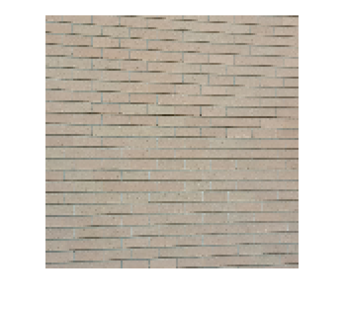

Fun with sampling, registration, and quantization
Contents
Reset envrioment
clear all; close all;
Read in images
sky_full_im = imread('sky.jpg'); bricks_full_im = imread('bricks.jpg');
Sampling and Resizing
Here we resize the sky image with antialising off and on.
sky_128_aliased=imresize(sky_full_im, [128 128], 'Antialiasing',false);
sky_128 = imresize(sky_full_im, [128 128]);
Here we show the aliased sky image
figure; imshow(sky_128_aliased);
And now wae shoe the anti-aliased sky image
figure; imshow(sky_128);
In the case of the above images it is hard to see the effects of aliasing on both images
Here we resize the bricks image with antialsing off and on.
bricks_128_aliased=imresize(bricks_full_im, [128 128], 'Antialiasing',false);
bricks_128 = imresize(bricks_full_im, [128 128]);
Here we show the aliased sky image
figure; imshow(bricks_128_aliased);
And now wae shoe the anti-aliased sky image
figure; imshow(bricks_128);
With the above images we can see that with the antialising off we see aliasing in the bricks. Turning it on results in a better picture.
Resizing the images using nearest neighboor interpolation. Aliased Image first then antialiased.
figure; sky_512_aliased_nearest=imresize(sky_128_aliased,[512 512], 'method', 'nearest'); imshow(sky_512_aliased_nearest) sky_512_nearest=imresize(sky_128,[512 512], 'method', 'nearest'); figure; imshow(sky_512_nearest) bricks_512_aliased_nearest=imresize(bricks_128_aliased,[512 512], 'method', 'nearest'); figure; imshow(bricks_512_aliased_nearest) bricks_512_nearest=imresize(bricks_128,[512 512], 'method', 'nearest'); figure; imshow(bricks_512_nearest)
Interpolation with bilinear
sky_512_aliased_linear=imresize(sky_128_aliased,[512 512], 'method', 'bilinear'); figure; imshow(sky_512_aliased_linear) sky_512_linear=imresize(sky_128,[512 512], 'method', 'bilinear'); figure; imshow(sky_512_linear) bricks_512_aliased_linear=imresize(bricks_128_aliased,[512 512], 'method', 'bilinear'); figure; imshow(bricks_512_aliased_linear) bricks_512_linear=imresize(bricks_128,[512 512], 'method', 'bilinear'); figure; imshow(bricks_512_linear)
Interpolation with bicubic
sky_512_aliased_cubic=imresize(sky_128_aliased,[512 512], 'method', 'bicubic'); figure; imshow(sky_512_aliased_cubic) sky_512_cubic=imresize(sky_128,[512 512], 'method', 'bicubic'); figure; imshow(sky_512_cubic) bricks_512_aliased_cubic=imresize(bricks_128_aliased,[512 512], 'method', 'bicubic'); figure; imshow(bricks_512_aliased_cubic) bricks_512_cubic=imresize(bricks_128,[512 512], 'method', 'bicubic'); figure; imshow(bricks_512_cubic)
Quantization
From this point further I will only be using the anti-aliased image Starting with the Sky image
sky_128_q = bitset(sky_128,1, 0); figure; imshow(sky_128_q) title('Quantized@7'); for n=2:7 sky_128_q = bitset(sky_128_q,n, 0); figure; imshow(sky_128_q); title(strcat('Quantized@', num2str(8-n))); end
I noticed false contouring at quantization level 5.
To correct for this I have added a small amount of noise.
sky_128_noise = imnoise(sky_128, 'gaussian',0,0.0001); sky_128_q = bitset(sky_128_noise,1, 0); figure; imshow(sky_128_q) title('Quantized@7'); for n=2:7 sky_128_q = bitset(sky_128_q,n, 0); figure; imshow(sky_128_q); title(strcat('Quantized@', num2str(8-n))); end
Now with the bricks
brick_128_q = bitset(bricks_128,1, 0); figure; imshow(brick_128_q) title('Quantized@7'); for n=2:7 brick_128_q = bitset(brick_128_q,n, 0); figure; imshow(brick_128_q); title(strcat('Quantized@', num2str(8-n))); end

I noticed false contouring at quantization level 4.
To correct for this I have added a small amount of noise.
brick_128_noise = imnoise(bricks_128, 'gaussian',0,0.0001); brick_128_q = bitset(brick_128_noise,1, 0); figure; imshow(brick_128_q) title('Quantized@7'); for n=2:7 brick_128_q = bitset(brick_128_q,n, 0); figure; imshow(brick_128_q); title(strcat('Quantized@', num2str(8-n))); end